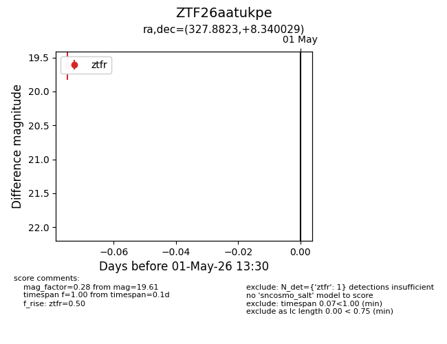
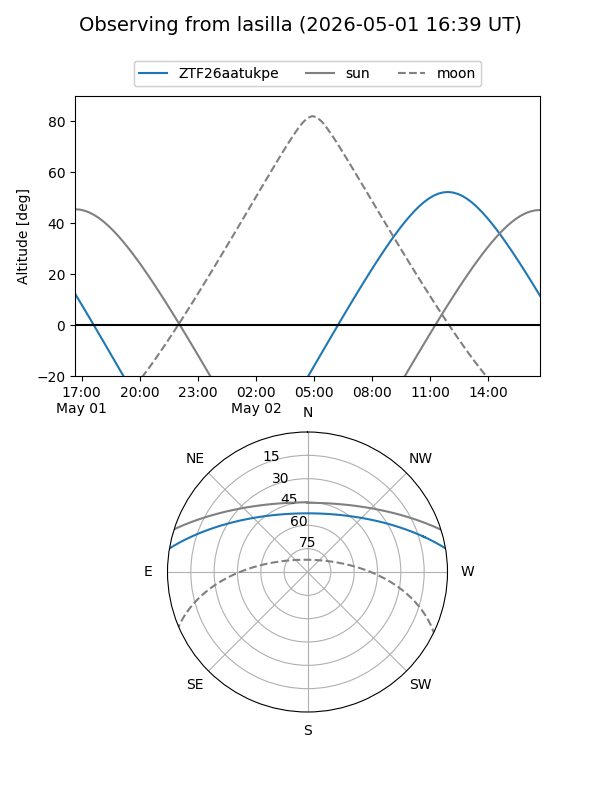
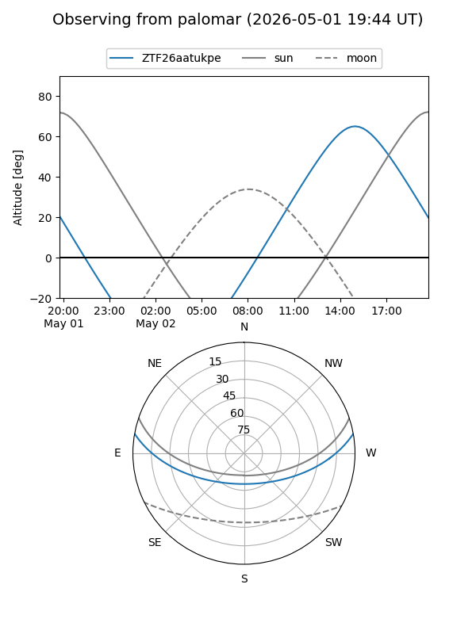

ZTF26aatukpe
Target ZTF26aatukpe at 2026-05-01 13:39
Aliases and brokers:
FINK: link
Lasair: link
ALeRCE: link
alt names
ZTF26aatukpe (ztf,fink_ztf)
Coordinates:
equatorial (ra, dec) = 327.8823,+8.34003
equatorial (HMS+DMS) = 21:51:31.75,+08:20:24.10
galactic (l, b) = (65.5891,-33.83272)
Flags:
Photometry:
last ztfr=19.61
1 ztfr detections
Lightcurve

Visibility


Additional plots